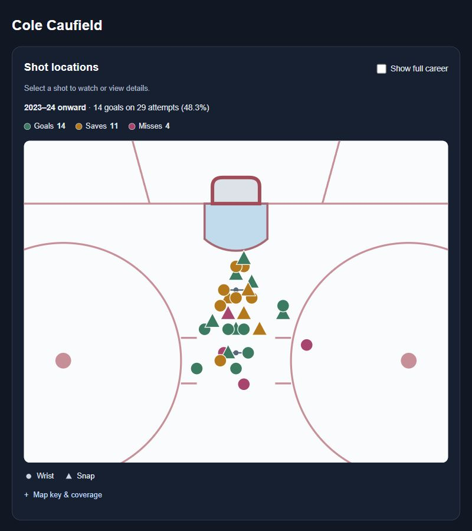
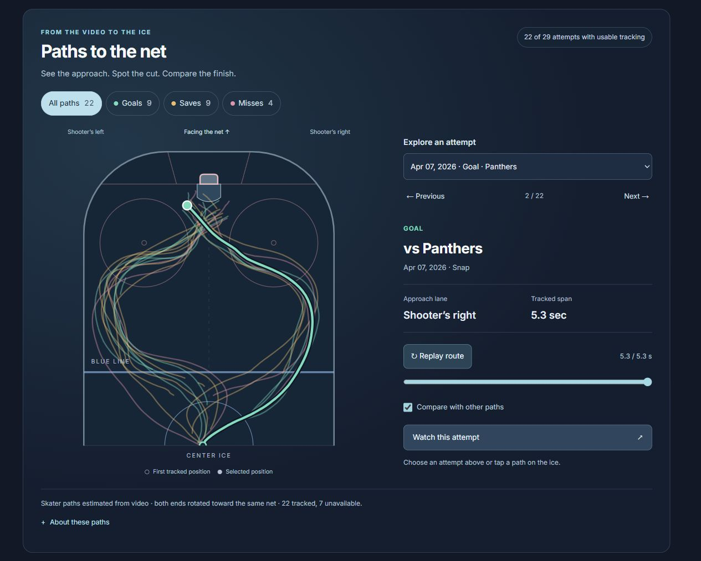
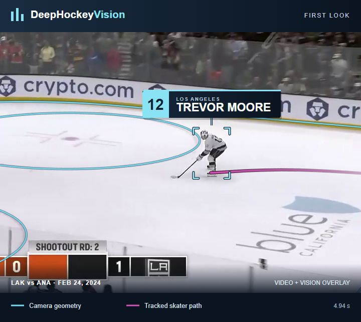

A shootout percentage tells you how often a player scores. It leaves plenty to be curious about. Where does he release the puck? Does he favor a backhand or a shot from farther out? Does he take the same route every time? And when a familiar move fails, what does the goalie do differently?
Those questions are the reason I’ve been expanding DeepHockey’s shootout pages. When I first shared them, the invitation was “Watch Every Player’s Attempts.” The recent upgrades turn that collection into a deeper analytics tool: shot location maps, quick scouting reads, detailed statistics, and interactive player paths, all connected to the attempts you can watch.
I want it to be easy to spot a tendency, see the numbers behind it, and pull up a clip to investigate. Shootouts are a great setting for that kind of exploration. With one shooter, one goalie, and open ice, you can follow the decisions that lead to the finish.
Shot location maps: where does the chance happen?
The shot location map puts a player’s attempts back on the ice. Color shows whether an attempt became a goal, a save, or a miss. Marker shape shows the recorded shot type. Both ends of the rink face the same net, so you can compare attempts without mentally flipping the picture.
Look for clusters. Does a player tend to finish close to the crease, or release from farther out? Are his backhands concentrated in a different area from his wrist shots? Do the goals and saves come from similar spots? The map gives those questions a visual starting point.

You can switch between the full recorded career and attempts since 2023–24. That makes it useful for comparing a longer-term habit with a more recent sample. Where a clip is available, select the marker to watch the attempt and see what happened around that release.
A dot shows the recorded release location on the ice. It doesn’t tell you where the puck was aimed inside the net, or what fakes came before it. That’s why the map and the video belong together: one reveals a pattern across attempts, while the other lets you inspect an individual play.
A quick scouting read before you press play
The new Quick scouting read gives you a useful first impression of a player’s finishing habits. Depending on his recorded attempts, it might describe him as shot-leaning, favoring backhands and close finishes, or using a mixture. A limited sample or unclear tendency stays visible too.
Nick Suzuki and Cole Caufield are a fun comparison. Suzuki’s read favors backhands and close forehand finishes. Caufield’s leans toward shooting from farther out. Open a few clips with those tendencies in mind and watch how each player gets into position to finish.
The scouting read helps you decide what to look for. It’s also a way into the deeper breakdowns below it: the scoring-by-finish tables, approach-side results, and example clips. A close release suggests a certain kind of finish, but the clip is still needed to see whether a deke actually happened.
Detailed statistics: how often, and over how many attempts?
The deeper statistics give that first impression some context. Career totals sit alongside the recent sample, and season-by-season results let you see how the record develops over time. The Scoring by finish tables separate backhands from forehands, then break forehands into close finishes, shots from farther out, and cases where the finish style is unclear. Slap shots appear separately in that breakdown when present.
Here’s the current career comparison for those two Montreal teammates:
| Player | Backhand | Forehand | Overall |
|---|---|---|---|
| Nick Suzuki | 7 / 14 | 4 / 23 | 11 / 38 |
| Cole Caufield | 0 / 0 | 18 / 37 | 18 / 37 |
Suzuki has one additional attempt with no recorded release, which is included in his overall total but sits outside the finish rows. Caufield’s recorded career attempts are all forehands. Within that group, his table shows 12 goals on 22 shots from farther out, compared with 1 on 3 close finishes; another 12 have an unclear finish style.
Those counts matter as much as the percentages. Three close finishes tell us much less than 22 shots from farther out. Suzuki’s backhand results are interesting, but they don’t prove that choosing a backhand on every attempt would help him. His choice also depends on what the goalie gives him.
You can switch the finish tables between career results and attempts since 2023–24. The approach breakdown adds another comparison: how frequently the tracked attempts come through each lane, and how often those groups score. Where the evidence is strong enough, a Career scoring pattern calls out a supported difference. Those callouts require additional sample, coverage, and statistical checks; the tables remain available for exploring the results even when no strong conclusion is justified.
Paths to the net: the buildup to the finish
The interactive Paths to the net view adds the movement leading into the attempt. Layer the available routes, filter them to goals, saves, or misses, and select an individual path. Replay follows the video timing, while a slider lets you examine the route at your own pace.

Suzuki’s page currently has 14 attempts with usable tracking, 13 of them classified as left-side approaches. That gives you a specific question to investigate: how many different finishes does he create from a familiar entrance? The label describes the main approach lane, so a left-side approach can still end with a late cut across the ice.
Try finding a similar route among both the goals and saves. Then use “Watch this attempt” to compare the available clips. Did the shooter release earlier? Carry the puck across his body? Catch the goalie still moving? A shot map locates the release; a trajectory shows the skater’s approach; the video lets you examine how the two connect.
Tracking coverage is shown alongside the paths. These are estimates for the available tracked attempts, and the lines follow the skater rather than the puck. The endpoint is the closest tracked position to the net, not a measured shot release.
The goalie’s side of the story
The goalie pages bring the same visual tools to the other side of the contest: shot locations and tracked paths for the attempts faced, plus an approach breakdown showing goals allowed from each lane.
Choose a goalie and compare similar approaches. Watch his depth, when he begins retreating, and how he responds to the final cut. A difference in goals allowed can suggest clips to study, but the sample and the shooters involved matter. Left and right are consistently labeled from the shooter’s viewpoint, including on goalie pages.
A first glimpse of DeepHockeyVision
The trajectories also introduce a project I haven’t shared here before: DeepHockeyVision. It’s about understanding hockey video: the camera’s view of the rink, player positions and identities, and the puck. We used DeepHockeyVision to estimate the player trajectories behind the shootout paths.


I’ll share more about DeepHockeyVision in a future post. For now, this is a glimpse of how that work can feed tools for exploring the game.
Follow a question through the page
The most useful insights come from moving between these views. A scouting read suggests a tendency. The statistics show its frequency and sample size. The shot map and paths put it on the ice. The video lets you examine the details, including the saves and misses that a highlight reel leaves out.
Start with a player you enjoy watching. Pick one tendency from his scouting read, check the finish results, and find a goal and a save to compare. Then look at the goalie’s page and watch the contest from his side.
That’s what I want the shootout pages to make easier: turning curiosity about a single attempt into a closer understanding of a player’s game.
Explore the player shootout pages →
Explore the goalie shootout pages →
Player counts and results are a snapshot of the DeepHockey pages on October 17, 2026. The linked pages update as more attempts are added.